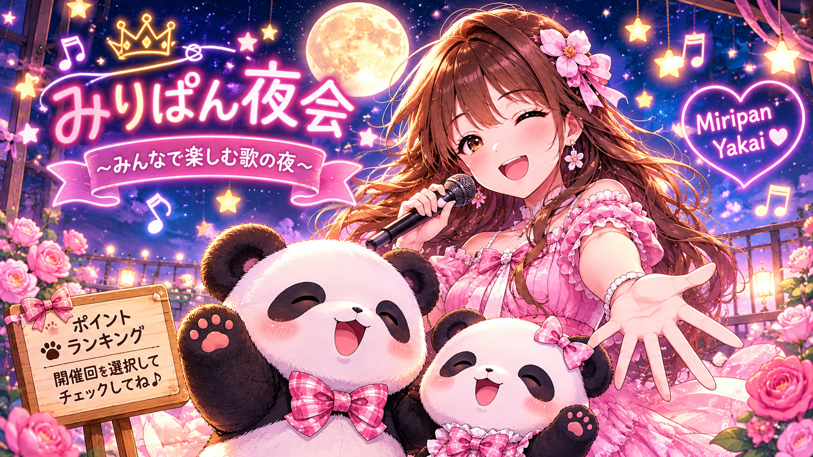

🏆 累計ポイントランキング
各回の獲得ポイントを参加者ごとに合算しています。0ポイントの参加者は表示していません。
| 順位 | 参加者 | VO1 | VO2 | 第3回 | VO5 | VO6 | 累計 | 参加回数 |
|---|
🎤 各回のポイント詳細
開催回と参加者を選択して、ポイント内訳やリクエスト曲を確認できます。

各回の獲得ポイントを参加者ごとに合算しています。0ポイントの参加者は表示していません。
| 順位 | 参加者 | VO1 | VO2 | 第3回 | VO5 | VO6 | 累計 | 参加回数 |
|---|
開催回と参加者を選択して、ポイント内訳やリクエスト曲を確認できます。